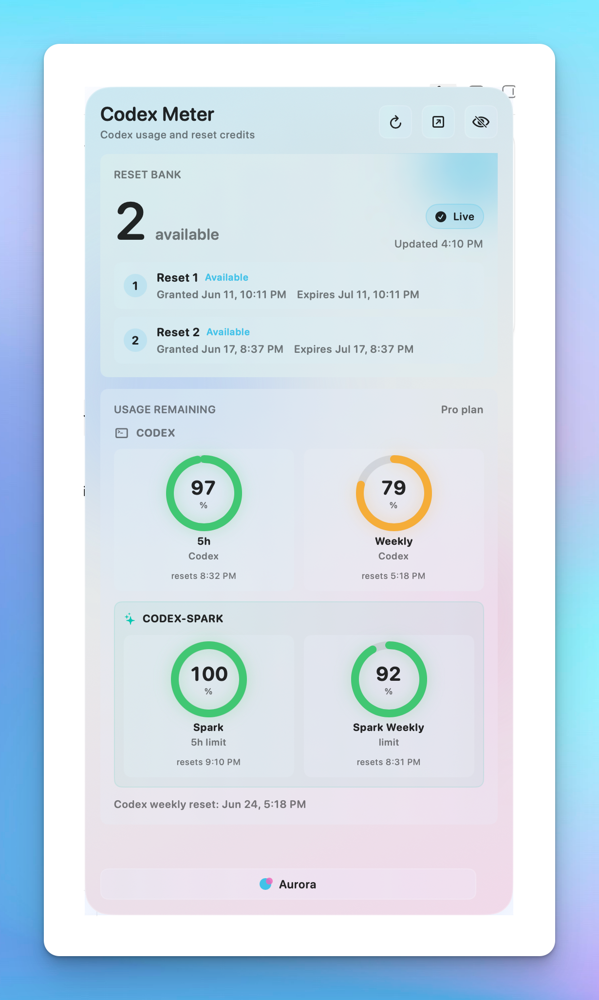
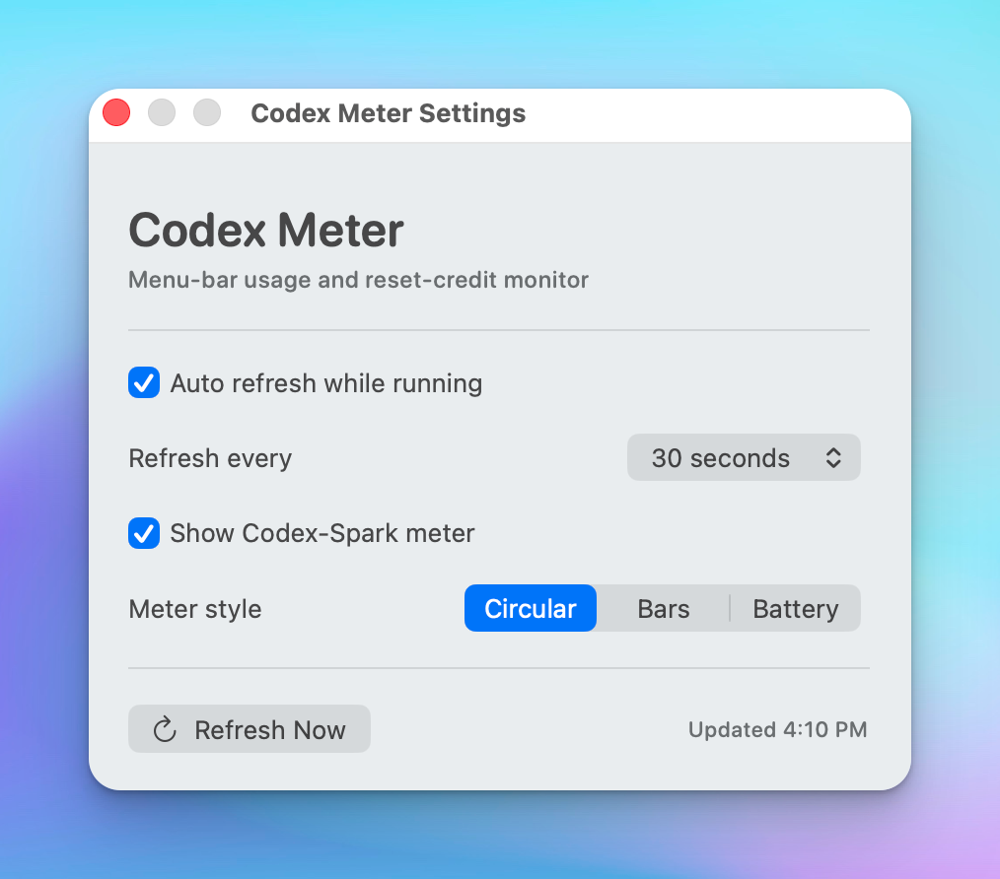
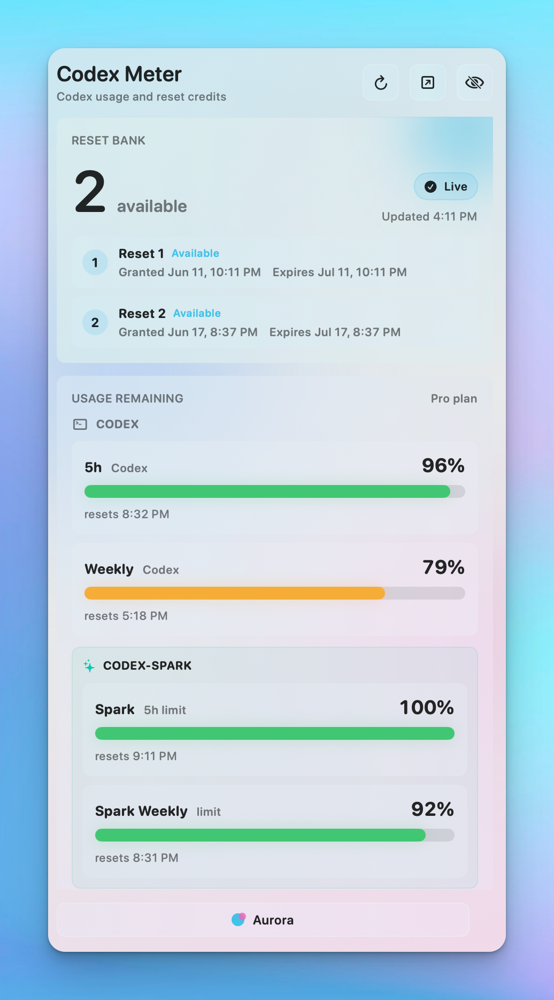
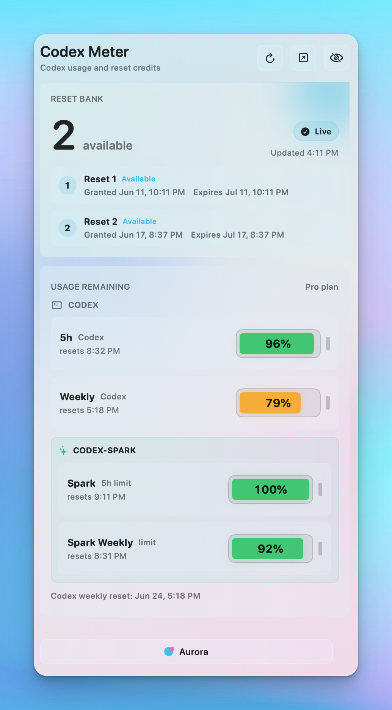

Native macOS menu-bar utility
Codex usage, Reset Bank, and Spark limits at a glance.
Reset Bank
Built for people who keep Codex open all day and need one calm place to check what is still available.


Settings
Choose Circular, Bars, or Battery while keeping the widget readable at small sizes.
Usage Remaining
Health colors shift from green to amber to red as remaining usage drops.


Local First
Codex Meter uses the local Codex session only to call the ChatGPT usage endpoints.
Open source
MIT licensed. Built for quick community fixes when backend payloads change.